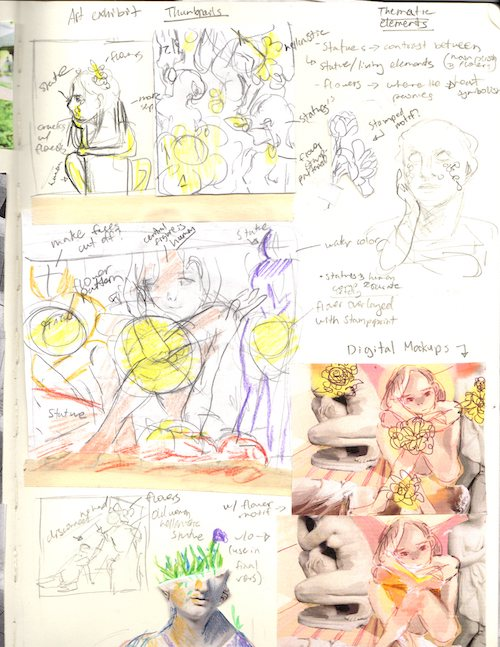
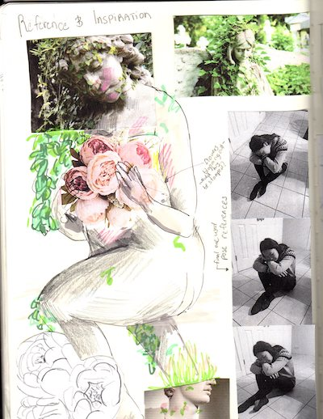

Art Exhibit Process
In the process I included the following:
- photo references to gather inspiration and to use as a basis for the statue aspects
- computer aided ideation to plan the color scheme and experiment with the layout of the piece
- writing to map out the thematic elements and develop what visual symbolism to use
Sketchbook Examples
source: Connie Liu

source: Connie Liu
source: Connie Liu